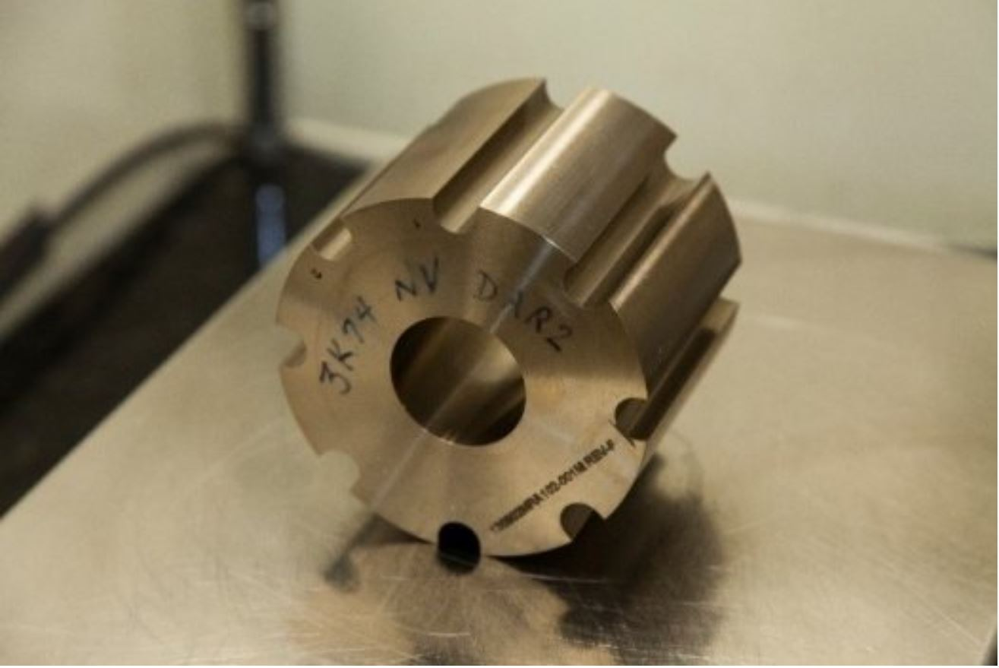
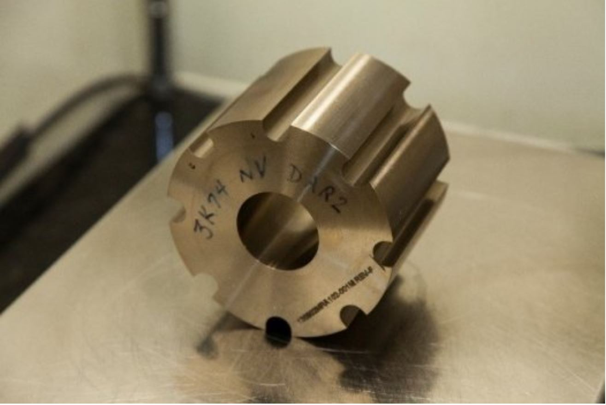

The Y-12 National Security Complex
What is Y-12?
The Y-12 National Security Complex
in Oak Ridge, Tennessee, is one of six
production facilities in the National
Nuclear Security Administration’s
(NNSA’s) Nuclear Security Enterprise
(NSE). Y-12’s unique emphasis is the
processing and storage of uranium
and development of technologies
associated with those activities. Decades
of precision machining experience
make Y-12 a production facility with
capabilities unequaled nationwide.
Our History
Constructed as part of the World
War II Manhattan Project, Y-12
provided the enriched uranium
for Little Boy, the atomic bomb
dropped on Hiroshima, Japan,
to help the United States and
her allies end a war that had
taken 63 million lives worldwide.
Afterward, Y-12 provided lithium
separation and key components
for the thermonuclear weapons
that helped end the Cold War.
Y-12’s expertise in machining,
handling and protecting
radiological materials has made
the Oak Ridge site central to the
nation’s nuclear security.
Our Mission
Y-12 National Security Complex has three primary national security
missions that protect our country and our allies around the world.
Maintaining the U.S. nuclear stockpile, reducing global threats, and fueling
the U.S. Nuclear Navy are key activities at this historic site.
Nuclear Criticality Safety Program
What is Nuclear Criticality Safety?
Nuclear criticality safety is a field of nuclear engineering dedicated to
the prevention of nuclear and radiation accidents resulting from an inadvertent, self-sustaining nuclear chain reaction.
A nuclear criticality accident occurs from operations that involve fissile material and results in a sudden and potentially lethal release of radiation.
What do Criticality Safety Engineers do?
Nuclear Criticality Safety Engineers attempt to prevent nuclear criticality accidents by analyzing normal and credible abnormal conditions in fissile material
operations and designing safe arrangements for the processing of fissile materials. These "arrangements", either passive (physical), active (mechanical), or administrative (human),
are implemented by inherently safe or fault-tolerant plant designs, or, if such designs are not practical, by administrative controls such as operating procedures or job instructions
in order to minimize the potential for a nuclear criticality accident.
Our Imperatives
- Safe
- Secure
- Zero Defects
- Deliver as Promised
 
